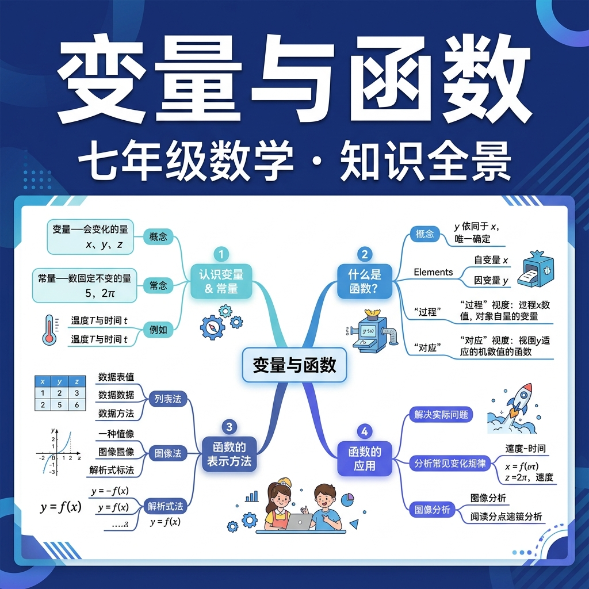

用数学描述世界中的变化与依赖关系

下列哪个量是"不变的"（常量）？
在"一个正方形，边长为 a，面积为 S"这个关系中，S 随 a 的变化而变化。当 a=3 时，S=？
And 你已经会用数字表示生活中的量：温度、距离、价格……
But 有些量会随时间变化（今天 22℃，明天 18℃），有些量却始终不变（1 天有 24 小时，圆周率 π 永远是 3.14...）。
Therefore 数学家把会变的量叫做变量，把不变的量叫做常量。认识这个区别，是理解函数的第一步。
下表是某天北京的气温记录，请观察哪些量是常量，哪些是变量：
| 时间 | 6:00 | 9:00 | 12:00 | 15:00 | 18:00 | 21:00 |
|---|---|---|---|---|---|---|
| 气温（℃） | 8 | 12 | 19 | 22 | 17 | 11 |
👆 时间和气温都是变量；"北京"这个地点在这次研究中是常量。
「一辆汽车以 60 km/h 的速度匀速行驶，行驶时间为 t 小时，行驶路程为 s 千米」。以下哪个是常量？
选择一个 x 值（投入硬币），机器输出唯一的 y 值（饮料）
💡 关键：每个 x 值只能对应唯一一个 y 值，这就是函数！
点击每张卡片，看看答案和理由：
下列说法中，正确的是：
同一个函数可以用三种不同方式来表达——就像同一件事可以用文字、表格或图片来描述：
解析式法：用数学表达式直接写出 y 与 x 的关系。
| x（自变量） | -2 | -1 | 0 | 1 | 2 | 3 |
|---|---|---|---|---|---|---|
| y = 2x+1（因变量） | -3 | -1 | 1 | 3 | 5 | 7 |
列表法：用表格列出自变量与因变量的对应值。
y = 2x + 1 的图像（直线）
图像法：用坐标平面上的图形表示函数关系。
已知函数 y = 3x - 2，当 x = 2 时，y 的值是：
为什么函数要求"唯一对应"？因为函数是一种确定性规则——给定输入，输出结果可预测。这就像：每次你按同一个电梯按钮，电梯不会随机去不同楼层。数学中的函数是自然界"因果关系"的抽象。
很多学生以为函数一定是 y = ... 这样的代数式。其实不然：
函数的本质是对应规则，不一定是公式。
同一个关系 y = 2x + 1，可以说"y 是 x 的函数"，也可以反过来说"x = (y-1)/2，x 是 y 的函数"。改变研究视角，自变量和因变量会互换。数学的美丽在于：你选择关注哪个方向的变化。
用自己的话解释：为什么 x²+y²=4（圆）不是函数，而 y=x²（抛物线）是函数？
函数 y = x² - 1，当 x = -3 时，y 的值为：
下列对应关系中，y 是 x 的函数的是：
小明说："因为 y = |x| 中，x=1 和 x=-1 都对应 y=1，所以 y 不是 x 的函数。"这个说法：
函数 y = f(x) 中，"f" 代表的是：
某市出租车计费规则：起步价 10 元（3km 内），超出后每千米 2.5 元。设行驶里程为 x km，费用为 y 元。以下说法正确的是：
请从生活中举一个函数关系的例子，说明自变量、因变量，并指出满足"唯一对应"的依据：
L1 基础判断下列对应关系是否为函数：y = x+5；y² = x；每个学生对应一个班级；一个父亲对应所有孩子。
L2 提高已知 f(x) = 3x² - 2x + 1，计算 f(0)、f(2)、f(-1) 的值，并用列表法呈现结果。
L3 拓展调查并记录一周每天步行步数，用列表法和折线图（图像法）表示"日期→步数"这一函数关系，并分析变化趋势。